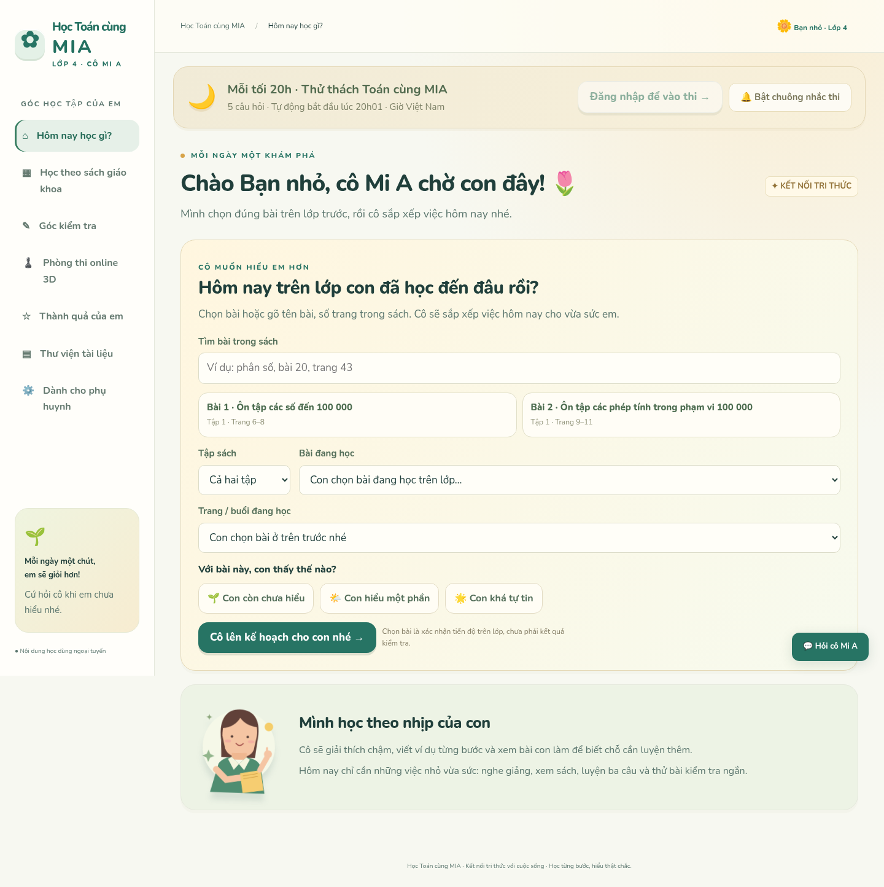
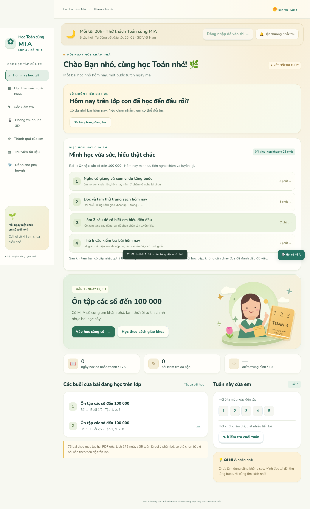
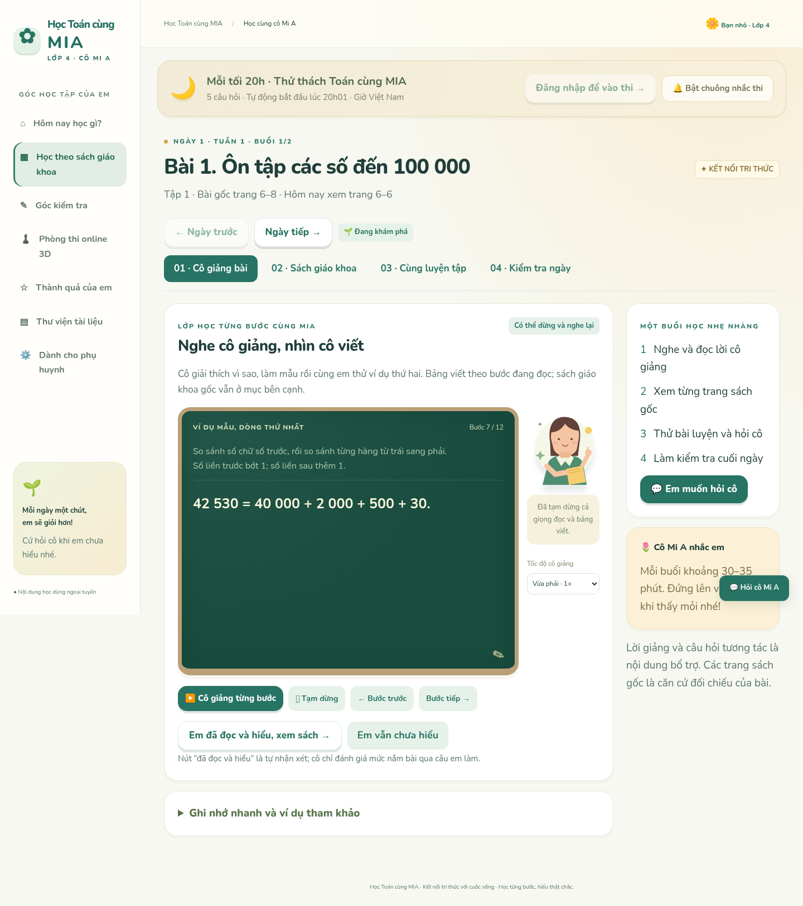
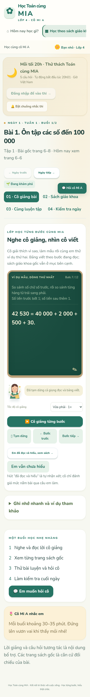

← Mở ứng dụngHọc theo sách giáo khoa cùng cô Mi A 🌷
Ảnh chụp kiểm thử Chrome/Chromium: chọn bài trên lớp, kế hoạch trong ngày và bài giảng viết bảng theo lời đọc. Dữ liệu trong ảnh là dữ liệu minh họa.

Cô hỏi bài đang học trên lớp
Danh sách việc hôm nay theo bài và mức cần hỗ trợ
Bài giảng dài hơn, bảng viết từng bước
Bài giảng trên màn hình điện thoại